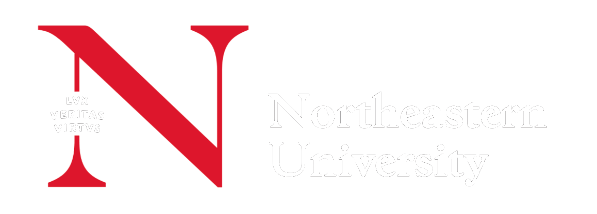

An interactive browser-based tool running Dijkstra, A* Manhattan, and A* Euclidean side-by-side on weighted grids. Users paint walls (∞), grass (×2), and swamps (×5), then watch all three execute with per-cell f(n) cost overlays. Benchmarks confirm A* Manhattan cuts node expansions by ~50% vs Dijkstra on identical paths.
Algorithm trade-offs are hard to internalize from pseudocode alone — the contrast between uninformed and informed search only becomes intuitive when you can watch both exploration frontiers side by side in real time.
Most tools show one algorithm at a time on uniform-cost grids, making direct comparison impossible. This project closes that gap: Dijkstra, A* Manhattan, and A* Euclidean run simultaneously on shared weighted grids, with step-by-step replay and per-cell f/g/h overlays that reveal exactly why each algorithm expands each node.
Student feedback during development confirmed the core gap: watching A*'s frontier stay focused while Dijkstra fans out in all directions builds intuition no static textbook diagram can replicate.
| Algorithm | Heuristic h(n) | Best suited for |
|---|---|---|
| Dijkstra | 0 (uninformed) | Baseline; always optimal |
| A* Manhattan | |Δx| + |Δy| | Square 4-way grids |
| A* Euclidean | √(Δx² + Δy²) | Any grid geometry |
The visualizer confirms heuristic choice has a measurable impact on efficiency. Learners build intuition through direct manipulation, not passive reading. Planned: hex grid support, bidirectional A*, CSV export.
Purpose-built palette encodes cell states at a glance:
Algorithm panels share Start, Goal and Path colors so results are directly comparable. Open-set blue reveals the live search frontier; expanded orange marks already-processed nodes. Terrain colors are visually distinct from algorithm-state colors to prevent misreading. A dynamic sine-wave neon pulsing effect highlights optimal paths for visual clarity.
Dijkstra (left) expands more nodes than A* Manhattan (centre) and A* Euclidean (right); all three find the same optimal path (violet).
Benchmark on a 20×20 square grid (seed = 42). All three algorithms return the same optimal path of length 26. Node expansion is the key efficiency differentiator:
A* Manhattan reduces node expansions by ~50% vs Dijkstra; A* Euclidean by ~37% — both always guarantee the same optimal path, a direct measurable benefit of informed search.